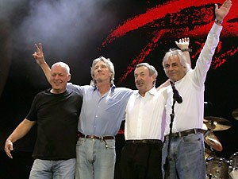

Another Brink in The Wall (Pink Floyd)
Situação Comunicativa
A obra audiovisual contemporânea, Pink Floyd – The Wall, Alan Parkes, parte II do vídeo-clip como a música Another Brink in The Wall. Os personagens envolvidos se situam entre a década de 40 a 70, e a música faz uma crítica com relação a ao sistema educacional e sua forma de conduzir os pensamentos dos jovens.
Cena Enunciativa
Tanto a música quanto o filme faz uma análise reflexiva do sistema educacional, principalmente o sistema e características vividos logo após a segunda guerra mundial, pela sociedade ocidental. O filme se relaciona também com o muro de Berlim e no contexto da Guerra Fria, representando uma época de profundo tensões externas e refletindo em traumas internos, que explode com a destruição da escola e enfatiza os muros sendo quebrados, uma alusão a queda do muro de Berlim à uma quebra de muitos paradigmas impostos na época.
As outras violências
Análise do Vídeo
O vídeo enfatiza comportamentos comuns do sistema de ensino, numa época que se
levava em relevância por parte dos adultos uma educação severa sem possiblidade de
livre expressão individual por parte dos alunos. Situação essa vista na atitude do
professor menosprezando a poesia escrita pelo aluno.
A escola era um ambiente em que o professor tinha um poder autoritário e ate mesmo
violento, enfatizado no castigo sobre os alunos. O vídeo faz uma análise da atitude do
professor em casa se comporta de uma maneira, sobre a disciplina de sua esposa e
nesse momento aparece cenas com imagens do professor batendo nos alunos como
forma de aliviar suas prisões internas limitadas pelos aparentes comportamentos que
a sociedade o colocava.
O Clímax do vídeo se dar aos alunos caminharem com máscaras iguais ate um
moedor, onde são moídos. As máscaras representam pessoas sem personalidades
próprias, sem liberdade de expressão, serem moídas as tornam pessoas como
pensamentos uniformes e fragilizadas. No fim há uma quebra dos padrões pela
destruição da escola pelos alunos, revelando suas revoltas contra o sistema.
Banda Pink Floyd
 Foto atual dos componetes da banda.
Saiba mais sobre sau discografia